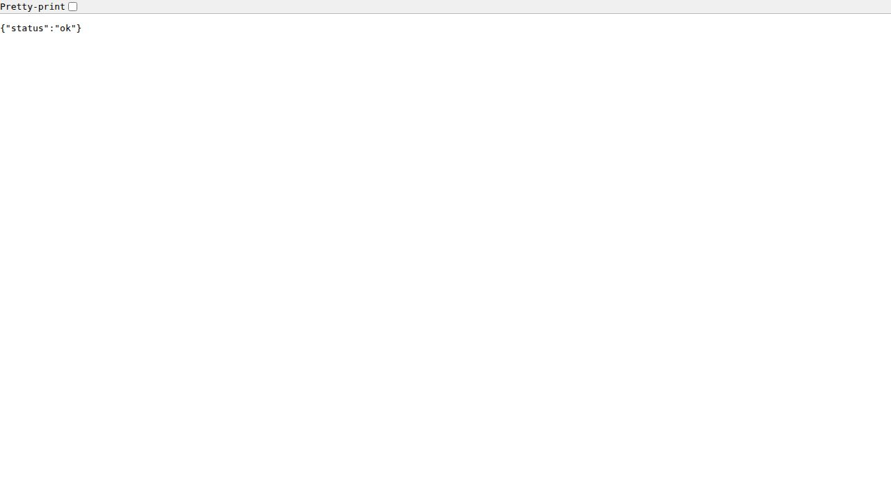
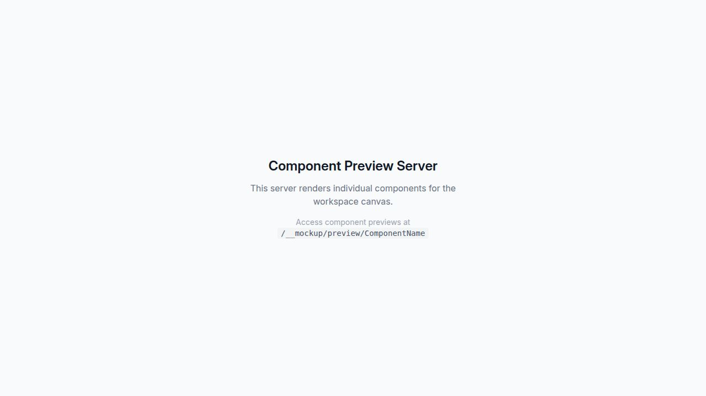

May 2026
Hemalink is a modern, full-stack Blood Bank Management System designed to streamline the management of blood donations, inventory, and requests. The platform connects donors, recipients, and blood bank administrators through a unified digital interface, reducing response time in critical situations.
Built on a robust TypeScript monorepo architecture, Hemalink offers a schema-first API design, type-safe data validation, and a component-driven front-end — ensuring reliability, scalability, and maintainability at every layer of the application.
Hemalink follows a pnpm monorepo structure, with clearly separated concerns between shared libraries and deployable application artifacts.
Express 5 REST API server. Handles all business logic, database interactions, and exposes typed endpoints validated by Zod schemas.
Vite-powered React application serving as a live component preview environment for isolated UI development and testing.
OpenAPI YAML specification — the single source of truth for all API contracts. Drives code generation for both client and server.
Drizzle ORM schema definitions for the PostgreSQL database, managing all data models and relationships.
Auto-generated Zod validation schemas derived from the OpenAPI spec — used on the server to validate all requests and responses.
Auto-generated React Query hooks derived from the OpenAPI spec — used on the frontend for type-safe data fetching.
Hemalink operates through a well-defined, schema-driven pipeline ensuring consistency from database to user interface.
All data models (donors, blood units, requests) are defined in lib/db using Drizzle ORM and mapped to a PostgreSQL database.
The lib/api-spec/openapi.yaml file defines every endpoint, its request structure, and its response shape — acting as a contract between frontend and backend.
Running the codegen command automatically produces Zod validators (for the server) and React Query hooks (for the frontend), eliminating manual duplication.
The Express 5 server receives requests, validates them using the generated Zod schemas, processes business logic, queries the database via Drizzle ORM, and returns validated responses.
The React frontend uses auto-generated hooks to fetch and display data. UI components from the mockup sandbox are composed into complete user-facing pages.
A global reverse proxy routes all incoming traffic by path — /api/* goes to the API server, while / serves the React frontend — with no port conflicts.
Hemalink's UI is built with React and styled using Tailwind CSS, leveraging a comprehensive component library based on Radix UI primitives (shadcn/ui). Every component is accessible, responsive, and tested in isolation via the built-in Component Preview Server.
All API endpoints are served under the base path /api and are validated with auto-generated Zod schemas derived from the OpenAPI specification.
Server health check — confirms the API is live and operational. Used by monitoring systems and load balancers.
Retrieve a list of all registered blood donors with their blood type, contact information, and last donation date.
Register a new blood donor into the system. Requires validated donor details including blood group and contact information.
Returns the current blood unit inventory grouped by blood type, including available quantity and last updated timestamp.
Submit a new blood request specifying the required blood type, quantity, and urgency level.
The following screenshots capture the live running application in the Replit deployment environment.


The GET /api/healthz endpoint returns a JSON response confirming the server is online and accepting requests. This is used by deployment infrastructure to monitor uptime.
The Component Preview Server allows developers to render and inspect any individual UI component in isolation before integrating it into the full application. Components are accessible via /preview/ComponentName.
Hemalink is deployed on the Replit cloud platform and accessible via a public .replit.app domain. The deployment is managed through Replit's infrastructure which handles TLS, health checks, and high availability automatically.
/api/* routes to the Express API Server/ routes to the React frontendThe project can be cloned from the GitHub repository and run locally with the following commands:
git clone https://github.com/dilrag03/Hemalink-blood-bank- cd Hemalink-blood-bank- pnpm install pnpm run dev